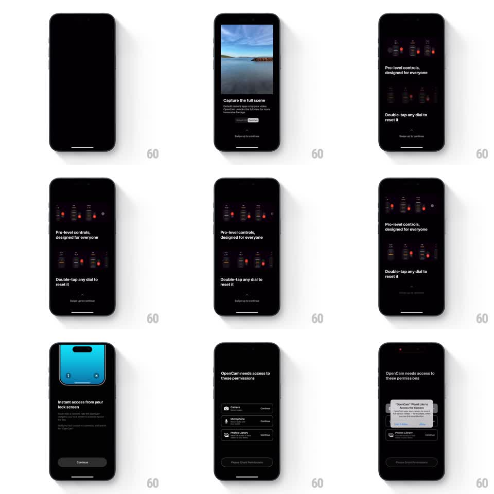

Media
Frame-by-frame

Rebuild this flow 1:1: OpenCam's onboarding - swipe-up feature pages with a live video comparison and dial demos, ending in a sequential permission-granting screen where each access row unlocks in turn.

Rebuild this flow 1:1: OpenCam's onboarding - swipe-up feature pages with a live video comparison and dial demos, ending in a sequential permission-granting screen where each access row unlocks in turn. ## Integration Integration: stack-agnostic spec - springs given as stiffness/damping, timed motions as duration + curve; map every value to your framework and animation library of choice. ## Scene Dark onboarding over black: page 1 "Capture the full scene" with a landscape video and a Default/OpenCam aspect toggle; page 2 "Pro-level controls, designed for everyone" with the control-dial pods and "Double-tap any dial to reset it"; page 3 "Instant access from your lock screen" with a cyan lock-screen widget mock and a Continue button; page 4 "OpenCam needs access to these permissions" listing Camera, Microphone, and Photos Library rows (icon, name, one-line reason, Continue button each) above a "Please Grant Permissions" bar. Every page carries a "Swipe up to continue" hint with a chevron. ## Motion spec Pattern: swipe-up paged onboarding with interactive demos and sequential permissions. - Swipe up advances pages: current page slides up and fades, next rises (spring ~300/22); the hint chevron bobs (translateY 0 -> -6pt, 1.4s loop). - Page 1: the comparison video crossfades between Default (cropped) and OpenCam (full scene) on toggle tap (300ms), the toggle pill sliding its indicator (spring ~320/20). - Page 2: dial pods stagger in (40ms apart, spring ~320/18); double-tapping a pod resets its value: the dial spins back to center (spring ~280/16) with the readout ticking through intermediate values. - Page 4: permission rows enter dimmed (40% opacity); the top row brightens and its Continue pulses (scale 1 -> 1.04, 1.6s loop); tapping presents the system alert (scale 0.9 -> 1 spring ~340/18 with scrim fade 200ms); on grant the row's button swaps to a checkmark (crossfade 150ms), the row dims to done-state, and the next row activates (250ms stagger). - "Please Grant Permissions" stays disabled (30% opacity) until all rows are done, then lights up with a single glow pulse. ## Calibration - Only one permission row is actionable at a time - order is enforced visually. - Page transitions are gesture-driven 1:1 while dragging, spring-completed on release. ## Reduced motion Pages crossfade (250ms); the comparison toggle crossfades; no chevron bob. ## Don't miss - The video comparison is the hook: it must play inline, not as a static frame. - Keep the orange accent consistent: record dot, active toggles, granted checkmarks.